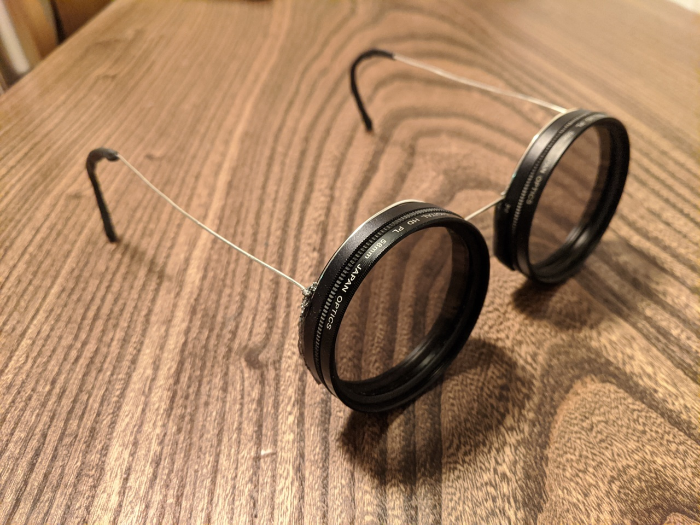
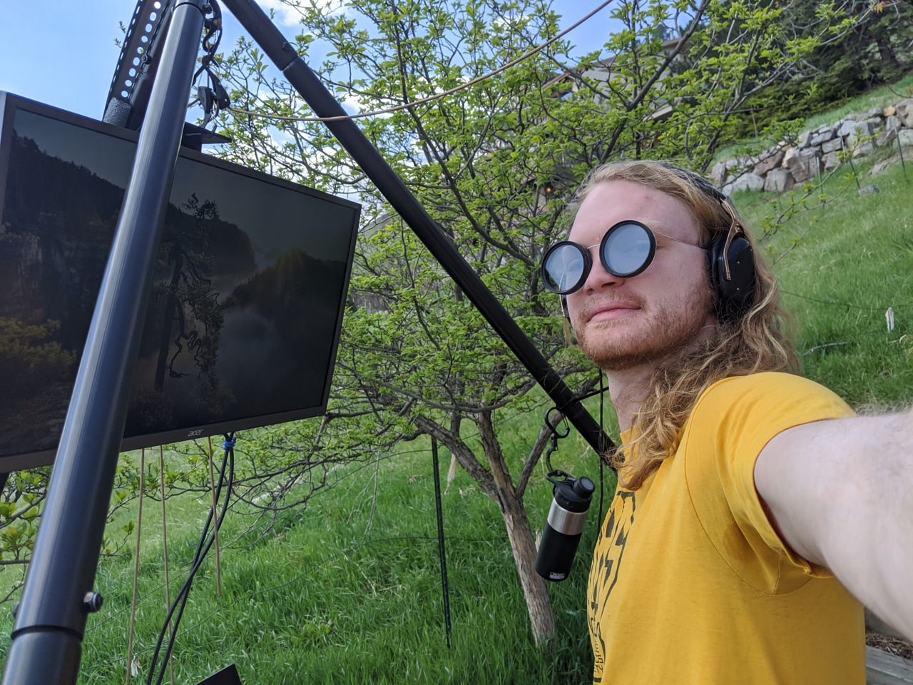
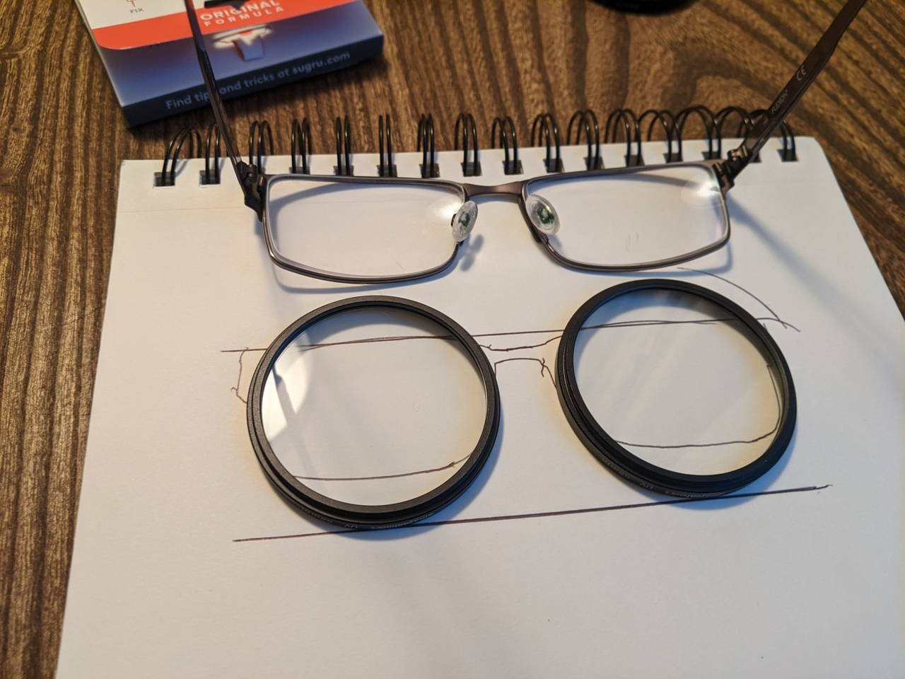
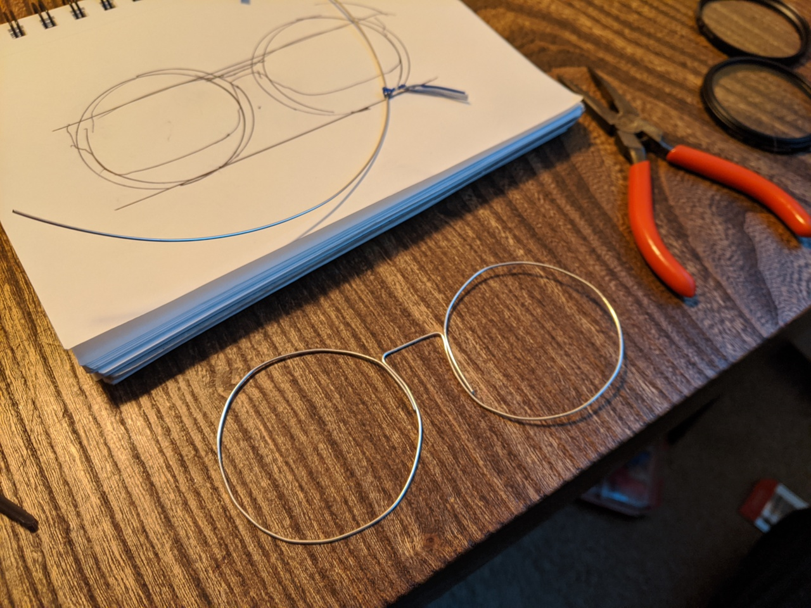
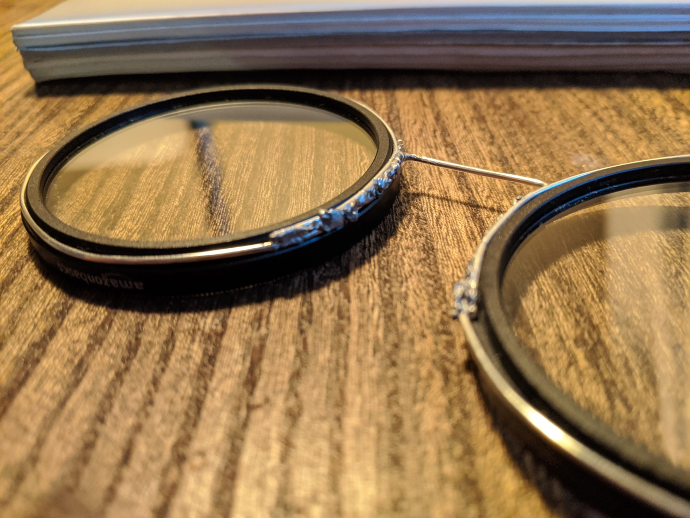
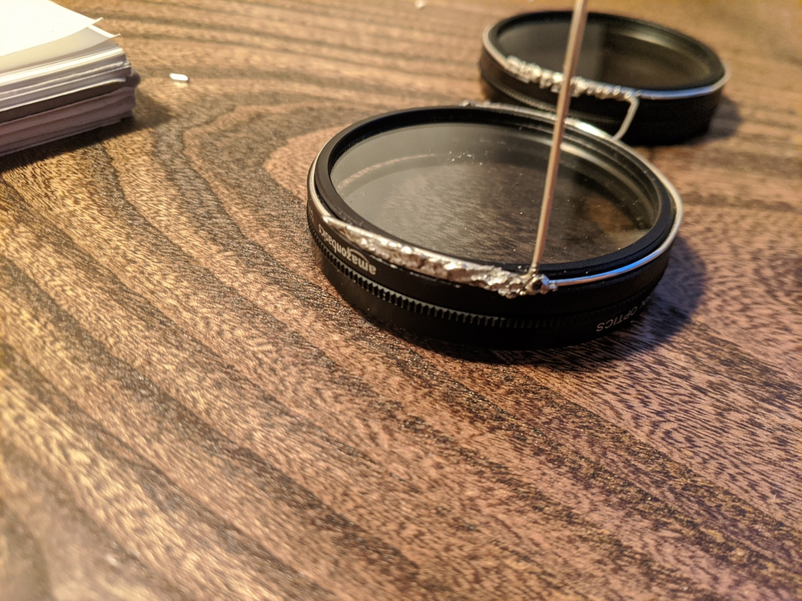
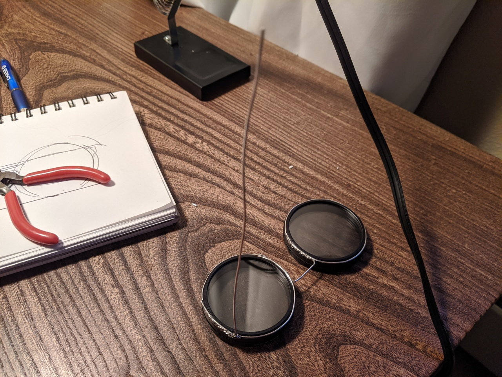
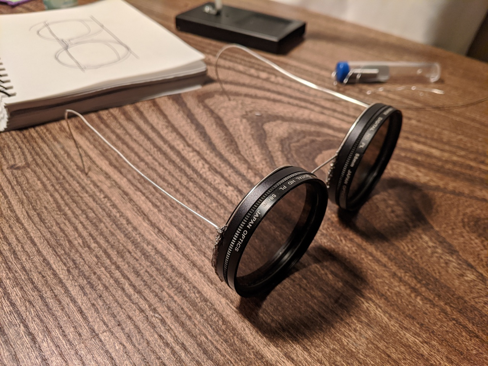

Polarizer Glasses for Outdoor Computing
I built some polarizer glasses!


The idea to build these was directly inspired by a comment from u/elonfutz in a reddit thread about one of my blog posts:
I had a special pair of polarized sunglasses made with the polarizer specifically tuned at the 45 degree angle to match my laptop monitor. They're real nice when working outside. They darken the world, but not your screen. Each laptop/screen might have a different angle, so I can't use them with just any screen. You might consider having some made for your outdoor use.
I love this idea! It allows reducing glare without reducing screen brightness. While I think there are plenty of viable ways to use your computer on sunny days, polarized glasses like these help too.
You might wonder why I would go through the trouble of building polarizer glasses. After all, polarized sunglasses exist, it'd be reasonable to think something like that might be sufficient. See the "Other options considered" section for more on that topic.
The build
Materials:
Two AmazonBasics UV Protection Camera Filters$. These filter harmful rays and make it easier to build the frame without interfering with the rotation of the polarizers. Without them, the build would probably still be feasible, but a bit trickier.
I used 18 gauge half hard sterling silver$ wire that I originally got for making more permanent laptop hinge attachments.
One packet of black Sugru moldable glue$.
Tools: Needle nose pliers + soldering iron (and solder)
I chose 58mm because that size seemed to roughly match the largest diameter of my eyeglasses. I also have an old DSLR with this size lens, so if I want a polarizer for it I'll have one.
My first step was to trace my eyeglasses and used this to inform the position of the lenses:

I then traced the desired lens position and chose a bridge position similar to my eyeglasses, and used the needle nose pliers + hand force to bend the wire into this shape:

I then sloppily soldered along the overlapping wire, with the wire pressed into the groove of the lens threading. This actually turned out to be sufficient to keep the lenses in place, even though the solder made no contact with the plastic.

Retrospectively, it made no sense for the wire overlap soldering to be right at the nose section. The addition of Sugru later made up for this, but if I were to do this again, I wouldn't have made that choice.
I decided to skip having hinges for the temples, since that would greatly complicate things. So, I just bent some wire at a 90 degree angle (with an arc on the short bit to match the circle), and soldered it:

By putting the glasses on, I then estimated a length for the temple and snipped it:

After doing the same on the other sides, and making the curved temple tips, these are really starting to look like glasses!

I then tried wearing them in practice, and predictably, the soldered nose area and bare wire temple tips started getting bothersome. Sugru to the rescue!
I used one packet of Sugru, and added it to the nose region and temple tips, resulting in the image at the beginning of this post. This stuff is great, it is very easy to mold and it has a rubbery feel after it cures. I'll be curious to see how it holds up to wear-and-tear – I'm optimistic that it will be fine.
Results
I built these less than a week ago, and there were a couple overcast days. So far I've only used them for a few hours, and I'm liking them a lot so far!
They are indeed effective at reducing glare. I can comfortably use the computer monitor while facing roughly in the direction of the sun. A potential downside of this is that this also makes it a bit easier to get sunburnt as it makes shade less necessary. Don't ask how I found that out…!
Other options considered
After discussing the polarized computer glasses idea with u/elonfutz, I began strongly desiring glasses that were purely polarizing in the proper angle for my screens.
By experimenting with my vertically polarized sunglasses, I determined that my ThinkPad laptop screens, an X1 and a P51, are both vertically polarized. This is great because that's the same direction as polarized sunglasses. So, in a pinch the sunglasses can work decently for laptop use. However, since they also generally dim, some of the screen's brightness is also lost.
I looked around for something like sunglasses, but just polarization and no tint. The closest I could find was driving glasses like these$. These turned out to not be very heavily polarized, and so did not cut down on glare very much.
Along the way, I also realized that my computer monitor is horizontally polarized – the opposite of sunglasses. I couldn't find readily available glasses with horizontal polarization, but I did come across the following:
IRL Glasses – Glasses that Block Screens — Kickstarter which are horizontally polarized in order to block screens. This suggests to me that vertical polarization is more popular than horizontal.
Via a coincidental reddit post, I found out about sunglasses with tint that is mechanically adjusted by a knob. Each lens has two polarizers, and the knob rotates one of the pairs of polarizers. I put in an order for the closest product I could find to this$, though it might take a while to receive as they are out of stock. My hope is that I can remove the non-rotating polarizers and modify these to be horizontally polarized.
Since nothing was readily available, I did a bit of brainstorming on how to make glasses with variable-angle polarization. This resulted in the design above, based on camera lenses. It seemed like it would be straightforward to build, functional, and weird looking. So, I pretty much had to give it a shot!
Footnotes
Some links are amazon affiliate links, which sometimes send me a bit of money when you make purchases after clicking them. The purpose of this blog is sharing information and ideas, not making money. But I figure I may as well add them, and I appreciate usage of them!